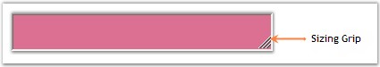

The appearance of the StatusBarAdv control can be enhanced using the properties given below.
Background Settings
The StatusBarAdv control's background can be customized using the various options provided in the BackgroundColor property given below.
|
StatusBarAdv Property |
Description |
|
BackgroundColor |
Gets / sets the background gradient and other styles. |
|
Style |
Specifies the brush style.
· Solid, · Pattern and · Gradient. |
|
BackColor |
Specifies the backcolor of the control. |
|
ForeColor |
Specifies the forecolor for any text or graphics in the control. |
|
PatternStyle |
Specifies the pattern style of the control. |
|
GradientBackground |
Indicates whether the background will be drawn with the gradient. |
|
GradientStyle |
Specifies the gradient style of the background.
· ForwardDiagonal, · BackwardDiagonal, · Horizontal, · Vertical, · PathRectangle and · PathEllipse. |
|
VerticalGradient |
Indicates whether the gradient is vertical. |
|
GradientColors |
Specifies the gradient colors.
The first entry in this list will be the same as the BackColor property, the last entry will be the same as the ForeColor property. |
|
[C#]
this.statusBarAdv1.BackgroundColor = new Syncfusion.Drawing.BrushInfo(Syncfusion.Drawing.GradientStyle.PathRectangle, System.Drawing.Color.NavajoWhite, System.Drawing.Color.IndianRed); |
|
[VB.NET]
Me.statusBarAdv1.BackgroundColor = New Syncfusion.Drawing.BrushInfo(Syncfusion.Drawing.GradientStyle.PathRectangle, System.Drawing.Color.NavajoWhite, System.Drawing.Color.IndianRed) |
Figure 1009: StatusBarAdv with BackgroundColor Set
Sizing Grip
A sizing grip can be displayed for the StatusBarAdv control using the property given below.
|
StatusBarAdv Property |
Description |
|
SizingGrip |
Indicates if the sizing grip is visible. |
|
[C#]
this.statusBarAdv1.SizingGrip = true; |
|
[VB.NET]
Me.statusBarAdv1.SizingGrip = True |
SizingGrip property when set will display a grip at the bottom right of the control as displayed in the below image.

Figure 1010: SizingGrip property set to "True"